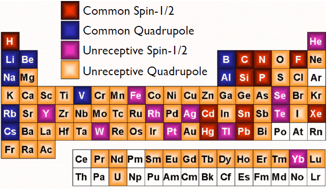
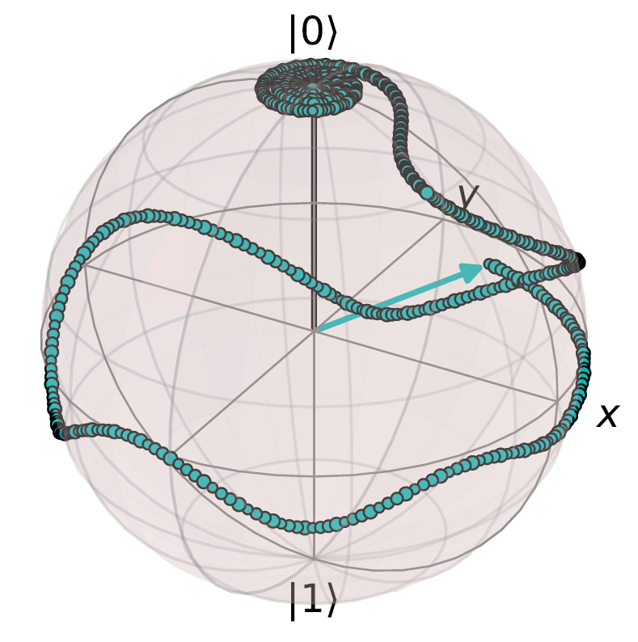

My name is Adam Altenhof, I am a third year PhD student in Dr. Robert Schurko's research group at Florida State University and the National High Magnetic Field Laboratory. I am interested in the development of new solid-state nuclear magnetic resonance (SSNMR) experiments through a fundamental understanding of the physics that underlies the technique. The following is a timeline of my current and expected progression throughout graduate school:
| Year 1 | Year 2 | Year 3 | Year 4 | Year 5 |
| Complete most coursework and begin research | Publish two papers and complete second-year talk | Finish remaining courses, publish four papers based on existing work, and write and defend research proposal for candidacy | Finish outstanding projects, write any new papers, and give fourth-year talk | Write and defend dissertation |
| [Completed] | [Completed] | [Ongoing] | [Future] | [Future] |

Solid-state NMR (SSNMR) spectroscopy is one of the most powerful methods for studying molecular level structure and dynamics in a wide array of solid materials. Because of its low-energy nature, SSNMR can reveal structural differences and changes to a high level of detail not afforded by most other forms of spectroscopy; however,
this same nature also results in very low signals, which compromises the sensitivity of the NMR experiment, making it challenging to acquire spectra with high signal-to-noise
ratios in reasonable time frames. Enormous efforts have been made to address the issue of low signal,
including the construction of specialized hardware and the design of new experiments and pulse
sequences. However, a majority of the NMR-active nuclei from elements across the periodic table are
said to be unreceptive to the NMR experiment, and many are still not subject to routine study using
conventional SSNMR methods.
My research focuses on acquiring SSNMR spectra of unreceptive nuclei, especially those with low NMR frequencies, low natural
abundances, inconvenient relaxation characteristics, and most importantly, very broad patterns ranging
from several kHz to tens of MHz in breadth (so-called ultra-wideline NMR (UWNMR) spectra). Previous work in the research group
has established two widely-used methods for the acquisition of UWNMR spectra using direct excitation
and broadband cross-polarization techniques, which feature a special class of frequency-swept
pulses known as wideband uniform-rate smooth-truncation (WURST) pulses. The overarching aims of
this proposal are (i) to design new pulses, pulse sequences, and methodologies for the acquisition of 
high-quality UWNMR spectra of unreceptive nuclei, and (ii) to develop a clear understanding of the
influence of different classes of pulses and pulse sequences on nuclear spin dynamics using quantum mechanical
modeling methods.